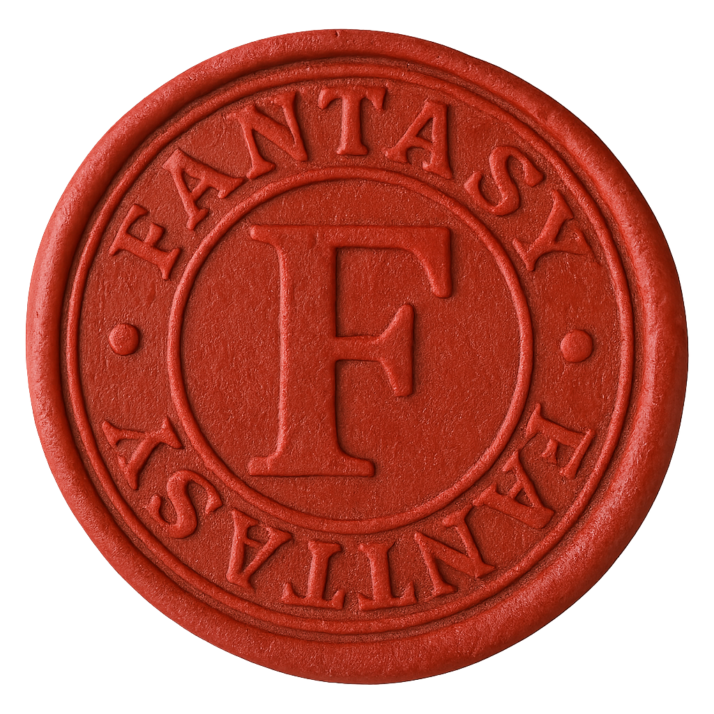

Mortos-Vivos
Sombra
Encontrado em: Ruínas, Templos, Cidades abandonadas.
Detalhes: Se esconde nas sombras; ataca desprevenidos; drena força vital; não tem forma.
Ghoul
Encontrado em: Ruínas, cemitérios.
Detalhes: Caçadores de carne humana; ágeis e ferozes.
Revenante
Encontrado em: Estradas assombradas, fortalezas arruinadas.
Detalhes: Lidera mortos-vivos menores; estrategista.
Cavaleiro do Vazio
Encontrado em: Ruínas fortificadas, templos profanados.
Detalhes: Cavaleiro corrompido; altamente tático; conjura magias sombrias.
Lich
Encontrado em: Templos Submersos, Torres de Feitiçaria.
Detalhes: Mestre em magia negra; controla mortos-vivos.
Mortívago
Encontrado em: Cidades à noite, cavernas úmidas.
Detalhes: Criatura com características de vampiros que suga energia vital; quase intangível.
Demônios
Gravoth, o Demônio das Lascas
Encontrado em: Desertos sombrios, regiões corrompidas.
Detalhes: Avançam em bando; usam gritos para causar medo. Pele feita de pedra e fortemente resistentes.
Valak
Encontrado em: Ruínas, fortalezas, cidades corrompidas.
Detalhes: Engana mortais; combates corpo a corpo e magia. NPC aliado do vilão da temporada.
Baal
Encontrado em: Planícies devastadas, templos profanados.
Detalhes: Demônio colossal; chamas e espada de destruição.
Aberrações
Mind Flayer
Encontrado em: Templos submersos, cavernas ocultas.
Detalhes: Controle mental; devora cérebros; são o medo da própria consciência; parasitas do intelecto.
Balbuciante
Encontrado em: Desertos sombrios, ruínas.
Detalhes: Desorienta e engole oponentes; caos absoluto; gosta de fazer suas vítimas perderem a sanidade.
Óculon
Encontrados em: Torres abandonadas, fortalezas.
Detalhes: Antigas entidades que observam o mundo pelos sonhos dos mortais. Se um Óculon te vê, tua alma é lembrada para sempre — e isso é o começo da tua ruína.
Chuul
Encontrado em: Lagos escuros, rios subterrâneos.
Detalhes: Captura presas com gás venenoso.
Bestas Corrompidas
Lobisomen Corrompido
Encontrado em: Florestas escuras, planícies.
Detalhes: Predadores em matilha; rápidos e ferozes. Extremamente territorialistas.
Homens Ratazanas
Encontrado em: Lixos, esgotos, cavernas.
Detalhes: Come tudo; armadilhas para presas; gostam de bagunçar tudo e deixar o ambiente desorganizado. São extremamente ágeis.
Esfinge Sombria
Encontrado em: Desertos, montanhas sombrias.
Detalhes: Hibrido de leão, águia e rosto de mulher. Misteriosa gosta de oferecer um enigma a suas vítimas antes de caçá-las.
Humanos Corrompidos
Fanático
Encontrado em: Ruínas, templos.
Detalhes: Devoto insano; ataques em massa.
Cultista
Encontrado em: Ruínas, vilas corrompidas.
Detalhes: Ataca com armas simples; invoca aliados.
Paladino Caído
Encontrado em: Fortalezas corrompidas.
Detalhes: Mestre em combate corpo a corpo; usa magias divinas corrompidas.
Warlock Corrompido
Encontrado em: Templos profanados.
Detalhes: Magia instável; invoca demônios menores.

Todas as informacoes presentes aqui
podem ser usadas durante o Roleplay